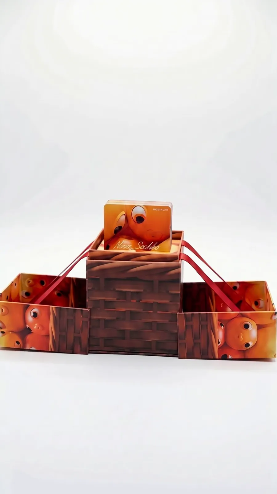
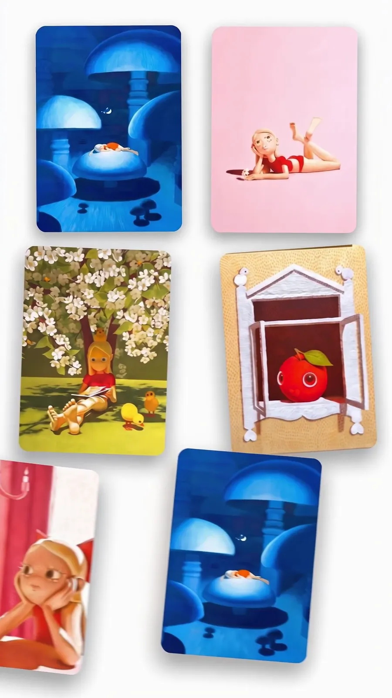
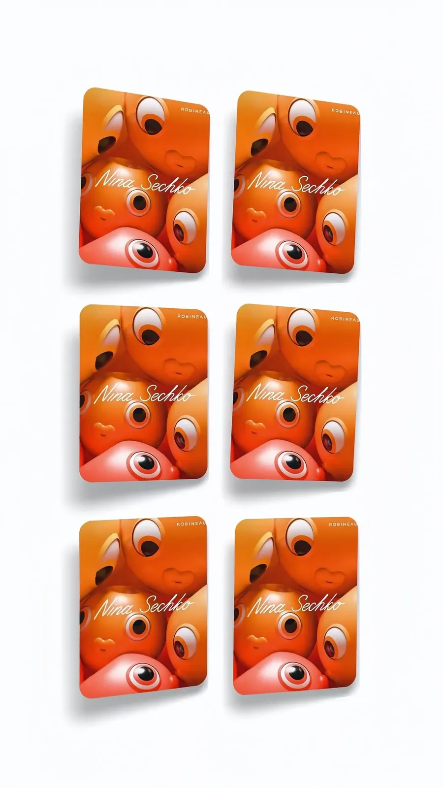

ROBINEAU × НИНА СЕЧКО
Коллекционное издание: живопись, в которую играют.
Коробка
Собрана вручную и раскрывается сразу на четыре стороны.
Внутри
Полная колода, напечатанная с оригинальных работ.
Игра
Переверните две карты. Найдите пару. Заберите картину.
Издание
Живопись Нины Сечко исследует созерцание себя — интимно, игриво и с тихой иронией по отношению к миру природы. Ее визуальные источники — комиксы, аниме и иллюстрированные книги русского детства. Это издание собирает те же образы в колоду, а колоду — в коробку, которая раскрывается как бумажная инженерия.
Как играть
Разложите карты рубашкой вверх. Переворачивайте по две за ход. Совпала картина со своей парой — пара ваша. От двух до шести игроков, десять минут на партию, читать не нужно — поэтому это в равной мере детская игра и предмет коллекционера.
Что вы получите

Собрана вручную, раскрывается на четыре стороны, со всех сторон напечатана работами художницы.

Работы, воспроизведенные с оригиналов; каждая встречается в колоде дважды.

Единое непрерывное изображение на обороте каждой карты, с подписью художницы.
Характеристики
Заказ
N I N A S E C H K O
Отправка в течение 3 рабочих дней · С отслеживанием · Возврат в течение 14 дней